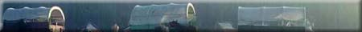

Assiniboine - Elbow
Cochin - Greenlake
Corne - Cumberland
Trail Crossing
Ellice - Carlton
Ellice - Elbow
Frobisher Post
Gabriel's Crossing
Hanson Lake Road
Moose Mountain - Ellice
Qu'Appelle Crossing
Second Meridian
Joseph Tyrrell
Willow Bunch
- Big Muddy
Wood Mountain - Qu'Appelle

|
Assiniboine - Elbow Trail
The elbow of the Assiniboine was an age-old meeting place for the Indians.
Father Cochin is best remembered as the priest who ministered to Poundmaker's Band during the rebellion of 1885.
The use of boats had been found to be the most efficient means of transportation in the fur trade, but for winter, overland trails were important.
This route was probably first used by the founders of Fort A La Corne in 1753.
Fort Ellice - Fort Carlton Trail The old cart-trail was part of the great overland route linking Fort Garry with Edmonton House. A fast cart-train would make the 900 mile trip in six weeks.
Western bound travellers became increasingly wary, for the area was jealously sought and fiercely guarded by Blackfoot, Cree and Assiniboine alike.
In November 1775, Joseph and Thomas Frobisher, and Alexander Henry, the elder, built their first fur trade post here.
Gabriel Dumont operated a ferry on the South Saskatchewan River near this site from early 1870s to 1883.
|
|
|
|
Hanson Lake Road
This 360 kilometre road between Smeaton and Creighton provided an all weather link between Prince Albert and Flin Flon.
Moose Mountain - Fort Ellice Trail In 1857, the Palliser Expedition, a scientific expedition sponsored by Canada to determine if the plains were suitable for agriculture, followed this trail.
The old ford on the Qu'Appelle River just south of here was once the cross-roads of the west.
From this line, surveys were carried westward to create a land system of sections, townships and ranges upon which titles to land were based.
Joseph Burr Tyrrell, appointed a member of the Geological Survey of Canada in 1881, surveyed vast areas of Manitoba, the North-West Territories (later Saskatchewan) and the Rocky Mountains.
Willow Bunch - Big Muddy Trail This trail was used by the N.W.M.P., Indians, outlaws and settlers to traverse the Big Muddy Badlands.
Wood Mountain - Fort Qu'Appelle Trail In 1876, Sitting Bull and his Sioux warriors defeated General Custer at Little Bighorn. In 1881, they travelled this path seeking sanctuary in the Qu'Appelle Valley.
|